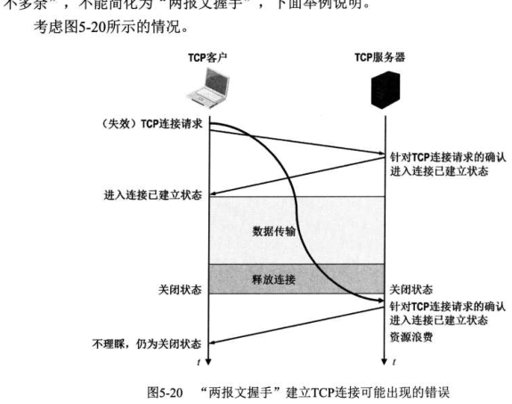

5.4 本章小结及疑难点
对应王道教材 5.4 节（教材 P265–P266）· 本节属于 408 考纲范围
本章要点回顾
- 传输层的功能：提供应用进程之间的端到端逻辑通信；复用与分用；对整个报文进行差错检测；提供面向连接（TCP 可靠）与无连接（UDP 不可靠）两种传输服务。
- 寻址与端口：端口号 16 位，仅具本地意义；熟知端口号 0～1023（FTP 21、TELNET 23、SMTP 25、DNS 53、TFTP 69、HTTP 80、SNMP 161），登记端口号 1024～49151，短暂端口号 49152～65535；套接字 =（IP 地址 : 端口号），唯一标识网络中某台主机上的一个应用进程。
- UDP：首部 8B（源端口、目的端口、长度、检验和各 2B）；面向报文、保留报文边界、支持一对多、无拥塞控制；检验需添加 12B 伪首部（含 IP 地址与协议字段 17），按 16 位字二进制反码求和再取反，接收方校验结果应全 1。
- TCP 报文段：首部 20～60B；序号按字节编号，确认号为期望收到的下一字节序号（累积确认）；数据偏移单位 4B；六个控制位 URG/ACK/PSH/RST/SYN/FIN；窗口字段通告接收能力；检验计算同样使用 12B 伪首部（协议字段为 6）。
- 连接管理：三次握手（SYN 消耗一个序号、第三次握手可携带数据）；四次挥手（FIN 消耗一个序号、半关闭状态、TIME-WAIT 等待 2MSL）。
- 可靠传输：序号 + 累积确认 + 重传（超时 RTO 略大于 RTTS；收到 3 个冗余 ACK 触发快重传）。
- 流量控制：滑动窗口机制，接收方通过窗口字段通告 rwnd，rwnd=0 时靠持续计时器 + 零窗口探测报文段打破死锁。
- 拥塞控制：四算法——慢开始（cwnd 指数增长）、拥塞避免（线性加 1）、快重传（3 个冗余 ACK 立即重传）、快恢复（cwnd 减半而非置 1）；超时则 ssthresh=cwnd/2、cwnd=1 重新慢开始；发送窗口上限 = min[rwnd, cwnd]。
疑难点逐条辨析
MSS 的设定与接收方的缓存大小或接收窗口无关，其主要目的是避免 IP 分片。若 MSS 设置得太小，网络利用率会显著降低——因为每个 TCP 报文段至少要加上 40B 的首部（TCP 首部 20B + IP 首部 20B）才能形成一个 IP 数据报；极端情况下，若数据部分仅 1B，则有效载荷占比仅为 1/41；若再考虑数据链路层的帧头尾开销，实际利用率还会更低。若 MSS 设置得太大，在 IP 层传输时可能因超过路径中某段链路的 MTU 而被分片；接收端需将所有分片重新组装成原始 TCP 报文段，一旦任一分片丢失，整个报文段都必须重传，反而增加传输开销和延迟。
因此，MSS 应尽可能大，但以在 IP 层不发生分片为前提。然而，由于互联网路径是动态变化的，某条路径上无须分片的 MSS，在另一条路径上可能仍需分片，故最佳 MSS 难以确定。为此，TCP 规定默认 MSS 为 536B，这意味着所有互联网主机都应能接收长度为 536B（数据）+20B（TCP 首部）=556B 的 TCP 报文段。
表面上看，TCP 使用累积确认，类似于 GBN。但区别在于：接收方不会丢弃正确到达但失序的报文段，而是将其缓存，并反复发送冗余 ACK，指明期望收到的下一个按序报文段的序号。例如，假设发送方 A 连续发送 N 个报文段，其中第 k（k<N）个丢失，其余均正确到达接收方 B。在 GBN 中，接收方会丢弃所有失序的报文段（第 k+1 至 N 个），发送方需重传从第 k 个开始的所有未确认报文段；而 TCP 仅重传丢失的第 k 个报文段，后续已缓存的报文段无须重传。此外，TCP 还支持 SACK（Selective ACK）选项：启用 SACK 后，接收方可明确告知发送方哪些非连续的数据块已成功接收，使重传行为更接近 SR 协议。因此，TCP 的重传机制可视为 GBN 与 SR 的混合体：基础行为基于累积确认和冗余 ACK 实现高效单点重传，SACK 则进一步增强了选择性确认能力。
两种事件反映的网络拥塞严重程度不同。收到 3 个冗余 ACK，表明后续部分报文段已成功到达接收方（否则无法触发重复确认），说明网络仍具备一定传输能力，拥塞相对较轻。此时 TCP 采用快速重传机制，将 cwnd 减半（乘法减小），适度降低发送速率。超时事件发生，意味着连 ACK 都未能及时返回，很可能网络已严重拥塞甚至局部瘫痪。为最大限度缓解拥塞，TCP 将 cwnd 重置为 1MSS，进入慢开始阶段，极其谨慎地重新探测网络容量。因此，超时代表更严重的拥塞，故采取更强的抑制措施；而冗余 ACK 表明网络尚可通信，只需适度退让。
主要是为了防止已失效的连接请求报文段突然传送到服务器，导致错误建立连接。考虑如下情况：客户 A 向服务器 B 发送 TCP 连接请求（SYN），该报文在网络中长时间滞留。A 超时后重传 SYN，B 收到后正常建立连接，完成数据传输并断开。此后，先前滞留的旧 SYN 报文（失效请求）才到达 B。

- 若采用三次握手：B 收到旧 SYN 后，会向 A 发送 SYN-ACK；但 A 发现该确认序号无效（非当前请求），直接丢弃，不回复 ACK，连接无法建立。
- 若采用两次握手：B 收到旧 SYN 后，立即认为连接已建立，并等待 A 发送数据；而 A 并无此连接意图，不会响应，导致 B 长期占用资源，造成浪费。
因此，三次握手能有效避免因网络延迟的旧请求引发的资源误分配，而两次握手无法做到。
假设主机 A 与 B 频繁建立连接、传输数据后释放。若每次 A 都使用相同的初始序号（如 1），考虑这样的场景：A 发送的某些 TCP 报文段在网络中滞留较久，A 超时后重传并完成后续通信。但这些旧报文段在连接早已释放后才到达 B，而此时 A 与 B 已建立一条新的 TCP 连接。由于新连接仍使用相同的初始序号，旧报文段的序号可能落在新连接的有效窗口内，导致 B 误将其当作新数据接收，造成数据混乱或协议错误。为防止此类问题，新连接的初始序号必须与之前连接使用过的序号不同，确保迟到的旧报文段序号不会被新连接接受。因此，TCP 不能使用固定初始序号，而应采用随时间递增的随机化初始序号。
不是多余的。即使底层无差错、无故障，IP 层本身是无连接且不可靠的，仍可能导致数据丢失、失序或重复，因此 TCP 的可靠交付依然必不可少。典型情况包括：
- IP 数据报独立选路，可能到达时失序；
- 路由异常可能导致数据报在网中循环，TTL 减至 0 后被丢弃；
- 路由器突发拥塞时，来不及处理的数据报会被丢弃。
以上问题均发生在网络层，与链路差错或节点故障无关。只有依靠 TCP 的可靠交付机制，才能确保目的进程收到完整、有序且无重复的数据。